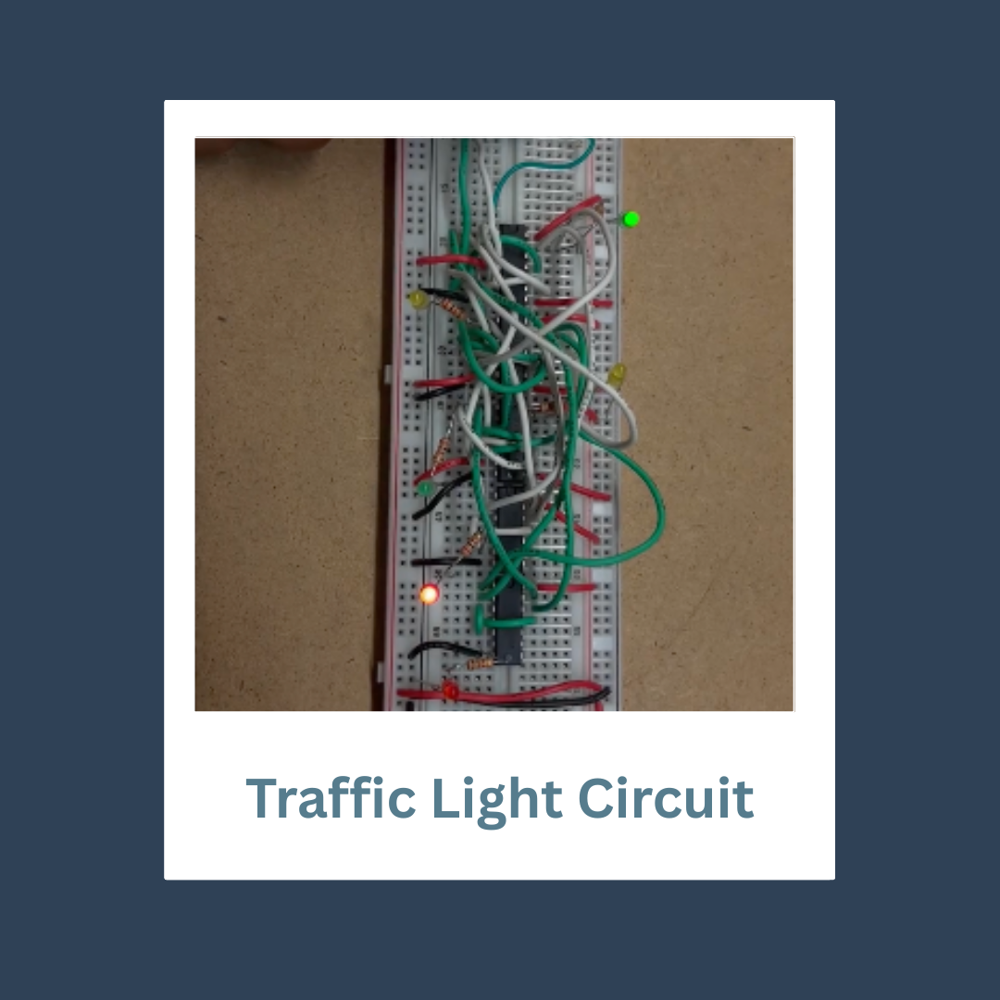

Traffic Light Circuit
This project simulates a clocked traffic light controller using flip-flops and sequential circuit design principles in Falstad.

Project Information
- Simulation Tool: Falstad Circuit Simulator
- Components: CD4013BE Flip-Flops, LEDs, SPST switches, resistors
- Concepts: Sequential Logic, Flip-Flops, Finite State Machines, Clocked Design
- Category: Sequential Circuits
Project Overview
This circuit models a two-way intersection traffic light system using D-type flip-flops and clock-based sequencing. The design transitions through states representing red, yellow, and green lights for both North/South and East/West lanes. The system is synchronized using a clock signal, ensuring proper timing between light changes.
Learning Outcomes
- Designed and simulated a synchronous traffic light controller using flip-flops.
- Applied knowledge of finite state machines and clocked logic systems.
- Explored active-high and active-low input configurations.
- Tested timing and state transitions using a virtual clock in Falstad.